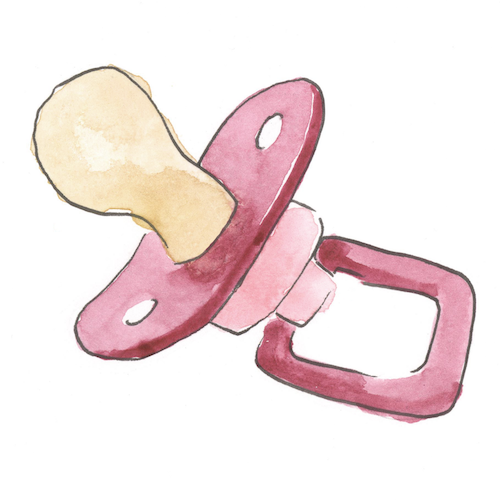
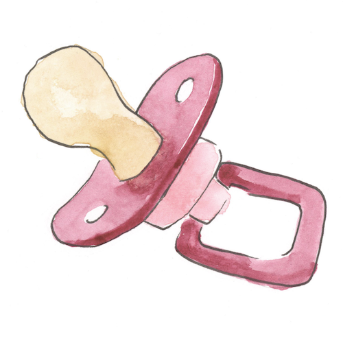

proto-gayness
Mitchell Johnson
A family photo and the search for queer childhood.


From the Editors:
Things we’re still looking for: the Coldplay CD we lost when we were 12; the ring we dropped in the trash in kindergarten; our keys, every morning.
This semester, Now Here This has been working on something different. Instead of publishing stories every week, we created an audio magazine: a unified release of fifteen stories, grouped around one theme. Found & Lost.
In the process of making this issue, several other accidental themes have emerged. These include: Dads, Canada, and Stefania Gomez (a former NHT producer). See if you can spot them all! Also, some stories aren’t really about foundness or lostness as far as we can tell, but maybe you’ll make the connection. Anyway, we’re excited to share them all with you.


 
